作为OSI模型的最底层，物理层是为了解决计算机之间如何将比特流传送到传输媒体，这里的传输媒体指的是光纤、网线等。主要任务是确定与传输媒体接口相关的特性和一些标准。
特性：
-> 机械特性：定义物理连接的特性，规定物理丽娜姐是所采用的规格、接口形状、阴险数目、引脚数量排列等。比如HDMI接口。
-> 电气特性：规定传输二进制，线路上信号的电压范围，阻抗匹配、传输速率和距离限制。
-> 功能特性：指定某一种电平代表啥意义，比如高低电平通常代表10。。
-> 规程特性：指定一个物理线路工作规划和时序的关系。
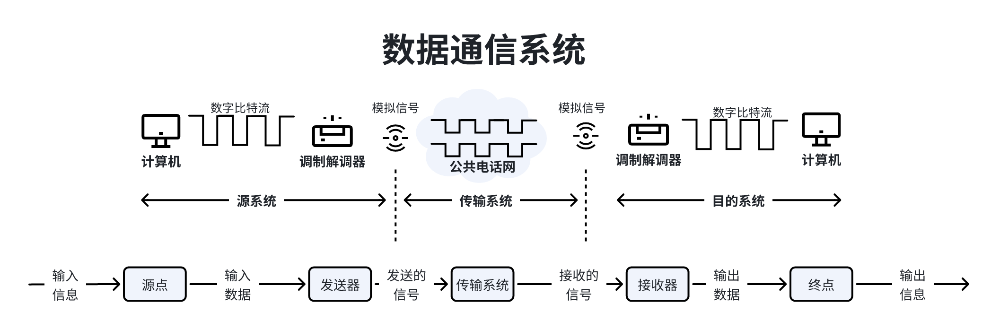
调制解调器就是咱们俗说的光猫，是将数字信息转换成模拟信号，电脑网卡发出来的使数字信号。
数字通信的目的是传送信息。
数据：指的是传送信息的实体，比如Hello World。
信号：数据的电气/电磁表现，使数据叜传输过程中的存在形式。
信号分类：
数字信号：消息的参数取值是离散的。
模拟信号：消息的参数取值是连续的。
信源：产生和发送数据的源头。
信宿：接收数据的终点。
信道：信号的传输媒介，一般用来表示某一个方向传送信息的介质，因此一条通信线路往往包含上亿条发送信道和一条接收信道。
信道按传输信号分类：
模拟信道：传输模拟信号。
数字信道：传输数字信号。
信道按传输介质分：
无线信道。
有线信道。
发送端只负责发送无法接收，接收端只负责接收无法发送，只需要一条信道。类似于广播。
发送端可以发送，也可以接收，接收端也可以发送也可以接收，但是同一时间只能执行一个动作要么发送要么接收，需要两条信道。类似于对讲机。
发送端可以发送，也可以接收，接收端也可以发送也可以接收，无任何限制，类似于打电话。
串行传输：一条比特流一位接着一位传输，特点是速度慢，费用低，适合远距离。
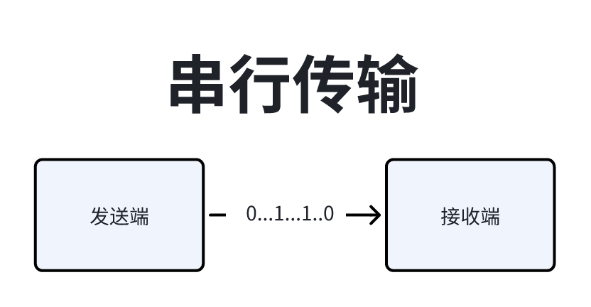
并行传输：速度块、费用高、适合近距离（计算机内部的数据传输）。
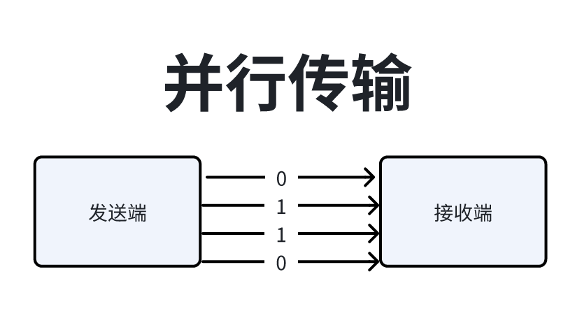
码元是数字通信中数字信号的计量单位，用一个固定时长的信号波形（数字脉冲）来代表不同数值的基本波形。 这个时长内的信号称为k禁止码元，时长称为码元的宽度。当码元的离散状态有M个时（M>2）此时码元有M禁止码元。
1码元可以携带多个比特的信息量，比如使用二进制编码时，只有两种不同的码元，一种代表0状态一种代表1状态。
如果M进制码元，则1码元对应的就是log2m比特位。
速率也叫数据率，指的就是数据的传输速度，表示单位时间内传输的数据量。用码元传输速率和信息传输速率表示。
码元传输速率：单位时间内数字通信系统传输码元的个数，又叫码元速率、波形速率、调制速率、符号速率，单位波特Baud，1波特表示数字通信系统每秒传输1个码元。这里的码元可以是多进制的（包含二进制），码元的速率与禁止数无关。
信息传输速率：单位时间内数字通信系统传输的二进制码元个数，又叫信息速率、比特率，单位是比特每每秒(b/s)。
码元传输速率与信息传输速率关系：对于一个M进制码元（M>=2），1个码元可以携带log2Mbit的信息量。则N Baud的码元速率对应的信息传输速率为 N * log2M bit/s。
传输速率与传播速率是不同的概念：传输速率指的是数据从主机到信道上的速度；传播速率是数据在整个链路上的速度，传播速率的快慢取决于电磁波、电波的速度。
带宽表示单位时间内从网络中的某一点到亮一点所能通过的最高数据率，经常用来表示网络的通信线路所能传输数据的能力，单位是b/s。
带宽与速率的关系：带宽是理想状态下的，传输速率是以码元为参考系进行衡量的。
比如：一个数字系统传输的四进制码元，4s内传输了8000个码元，另外一个数字通信系统传输的使十六进制码元，6s内传输了7200个码元。问两者的码元传顺速率分别是多少，哪个系统的信息传输速率更快？
对于四进制码元系统：
码元的传输速率 = 8000码元 / 4s = 2000 Baud
信息传输速率 = 2000 Baud * log24 = 4000 b/s
对于十六进制码元系统：
码元的传输速率 = 7200码元 / 6s = 1200 Baud
信息传输速率 = 1200 Baud * log216 = 4800 b/s
因此十六进制的系统传输速率更快。
失真有两种类型：
-> 有失真但可识别：
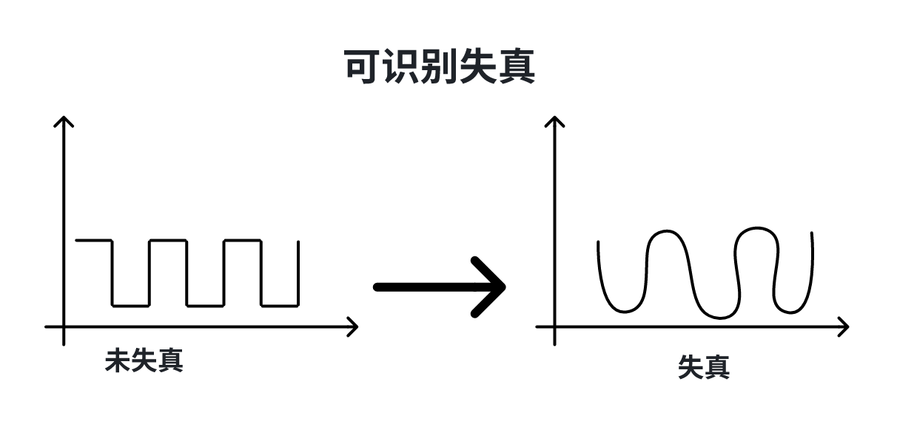
-> 失真太多不能识别：
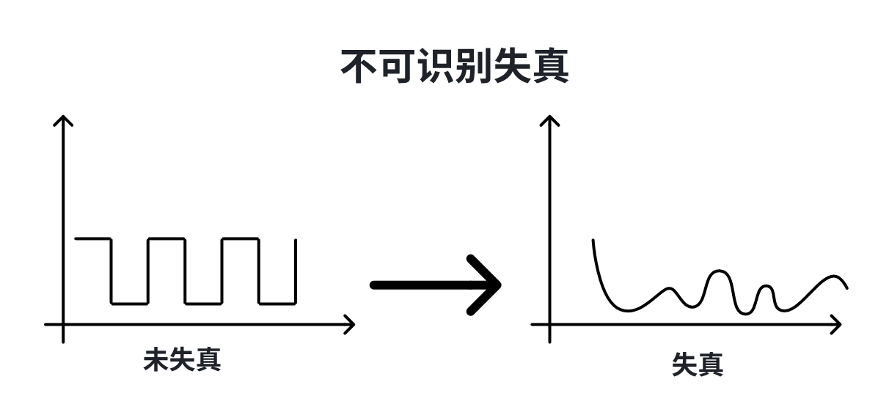
影响失真的主要因素：
-> 码元传输速率：越快越严重。
-> 信号传输距离：越远越严重。
-> 噪声干扰：噪声直接干扰到码元。
-> 传播媒体质量：质量差影响传播质量。
信号带宽：指信道中能通过最高频率与最低频率之差，比如某个电话线中信号低于200Hz就传传不过去，高于2200Hz也传不过去，那么贷款就是2000Hz。
频率低传播不了是因为失真率更高，频率高传播不了是因为码间串扰。
码间串扰：接收端收到的信号波形失去了码元之间清晰界限的现象。
举个简单的例子来说明，一群人每秒20米的速度从你面前跑过，现在要求你把经过的人的性别按照顺序记录下来，因为速度太快，可能在记录的时候就会出现差错，这种会随速度越快准确性就越低，这就是码间串扰。
在理想低通条件下（无噪声，带宽受限），为了避免码间串扰，极限码元传输速率是2W Baud，W是信道带宽，单位是Hz。
理想低通信道下的极限数据传输率为2W * log2V（V表示几种码元，也就是码元的离散电平数目，log2V则是一个码元可以代表几位）。
我们可以得到以下结论：
-> 在任何信道中，码元传输速率都是有上限的，如果传输速率超过上限，就会出现严重码间串扰问题，使接收端不可能完全正确识别码元。
-> 信道的频带越宽（能通过的信号分量越多），就可以用更高的速率进行码元的有效传输。
-> 奈氏准则给出了码元传输速率的限制，但并没有对信息传输速率给出限制。
-> 由于码元的传输速率受内饰准则的制约，所以要提高数据的传输速率，就必须设法使每个码元携带更多比特的信息量，这就需要采用多元制的调制方法。
举例子：在无噪声的情况下，如果某通信链路的带宽位3kHz，采用4个相位，每个相位具有4种振幅的QAM调制技术，则该通信链路的最大传输速率是多少？
回答：W = 3KHz, V = 4 * 4 = 16
最大传输速率 = 2W * log2V = 2 * 3000 * log216 = 24 kb/s。
信噪比：噪声存在于所有电子设备和通信信道中。由于噪声是随机产生的，它的瞬间值有时特别大，因此噪声会使接收端对码元的判决产生错误。但是噪声的影响是相对的，如果信号较强，那么噪声影响相对较小。因此信噪比比较重要。 信噪比 = 信号的平均功率 / 噪声的平均功率，常记为S/N并用分贝（dB）作为度量单位。
信噪比（dB） = 10 * log10(S/N)。
香农定理：在带宽受限切有噪声的信道中，为了不产生误差，信息的数据传输速率是有上限值的。
信道的极限数据传输速率 = W * log2(1 + S/N) b/s。W代表带宽，S/N代表信噪比。
结论：
-> 信道的带宽或信道中的信噪比越大，则信息的极限传输速率就越高。
-> 对一定的传输带宽和一定的信噪比，信息传输速率的上限就确定了。
-> 只要信息的传输速率低于信道的极限传输速率，就一定能找到某种方法来实现误差错的传输。
-> 香农定理得出的为极限信息传输速率，实际信道能达到的传输速率比它低很多。
例子：
电话系统中的典型参数是信道贷款为3000Hz，信噪比为30dB，则系统最大的数据传输速率是多少？
答： 10 * log10(S/N) = 30 dB 则 S/N = 1000
极限传输速率 = 3000 * log2(1 + 1000) = 30 kb/s。
作用：奈氏准则主要作用是贷款受限无噪声情况下，为了变码间串扰，码元传输俗了上限位2WBaud；香农定理带宽受限有噪声条件下信息传输速率。
对速率的约束：奈氏准则受码元传输速率约束；香农定理受信息传输速率约束。
极限数据传输速率：奈氏准则为2W * log2V；香农定理为W * log2(1+S/N)。
提高速率的方式：奈氏准则提高带宽、采用更好的编码计数让一个码元对应多为；香农定理提高带宽、提高信噪比。
例子：二进制信号的信噪比为127 : 1的 4kHz信道上传输，最大的数据速率可达到多少？
奈氏准则：2 * 4k * log22 = 8kb/s。
香农定理：4k * log2(1+127) = 28 kb/s。
取最小的最大传输速率为 8kb/s。
信道：信道就是信号的传播介质，一般用来表示向某个方向传送信息的介质，因此一条通信新路需要包含一条发送信道和一条接收信道。
信道分类：
按传输信号分：
模拟信道：传送模拟信号。
数字信道：传送数字信号。
按传输介质分：
无线通信。
有线通信。
信道上传送的信号类别：
基带信号：经编码在数字信道上传输。
宽带信号：经调制在模拟信道上传输。
基带信号：将数组信号1和0直接用两种不同的电压表示，在送到数字信道上传输（基带传输），来自信源的信号，像计算机输出的代表各种文字或图像文件的数据信号都属于基带信号。基带信号就是发出的直接表达要传输的信息的信号，比如我们说话的声波就是基带信号。
基带信号可以有多重编码方式，例如高电压用1表示，低电压用0表示；或者用电压1低1高表示1，1高1低表示0。
宽带信号：将基带信号进行调制后形成的频分复用模拟信号，在通过模拟信道进行传输（宽带传输）。说白了就是把基带信号经过载波调制后，把信号的频率范围搬移到较高的频段以便在信道中传输（即仅在一段频率范围内能够通过信道）。
调制就是将数字信号转化成易于迅速传播的模拟信号，借条就是反过来把模拟信号转换成数字信号。
总结：
在传输近距离时使用基带传输，衰减小，信号内容不易发生变化。
在传输远距离时使用宽带信号，距离越远衰减越大，即使信号变化大也能过滤出基带信号。
对于数字数组而言，通过数字发送器把数据转换成数字信号叫做编码，通过调制器将数据转换成模拟信号交调制。
对于模拟数据而言，通过PCM编码器把数据转换成数字信号叫做编码，通过放大器调制器把数据转换成模拟信号叫做调制。
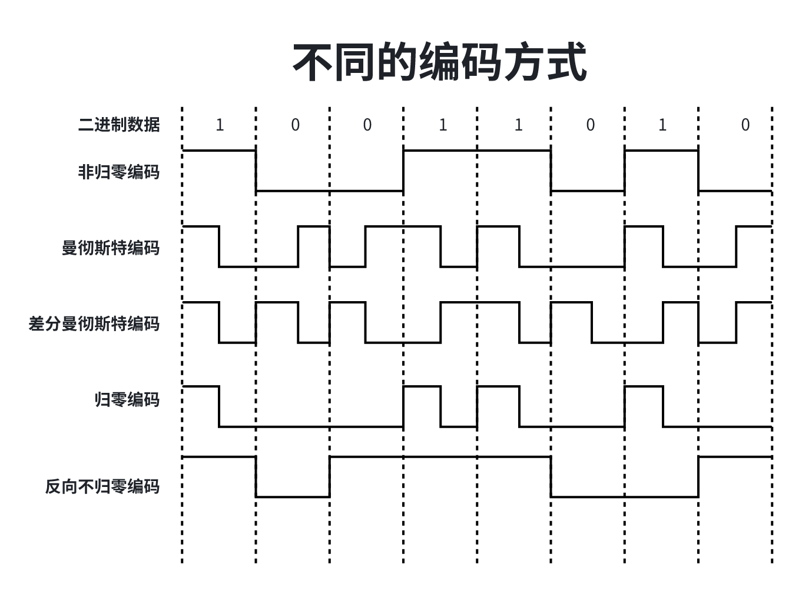
非归零编码（NRZ）：用高低电压表示0和1，编码容易实现，但是没有检错功能，且无法判断一个码元的开始和结束，以至于收发双方难以保持同步。即发送端发送一长串的0或一长串的1的话，无法判断其实位置，无法判断是一长坨1还是好多个1。需要发送端接收端规定每个码元多长时间。
归零编码（RZ）：信号电平在一个码元之内都要恢复到0的这种编码方式。这种编码方式信道处于低电平的时间过久，同样需要发送端接收端规定每个码元多长时间，所以不推荐使用。
反向不归零编码（NRZI）：信号电平饭庄表示0，信号电平不变表示1，如果发送端发送的数据全是1，那就会持续长时间出现相同的电平，要规定时间，同样不推荐使用。
曼彻斯特编码：将一个码元分成2个相等的间隔，前一个间隔为低电平后一个间隔为高电平表示码，码元0则正好相反。也可以采用相反的规定，该编码的特点是在每一个码元的中间出现电平跳变，位中间的跳变即作时钟信号（可用于同步），又作数据信号，但它所占的频带宽度是原始的基带宽度的两倍，所以数据传输速率只有调制速率的
这种情况下使用二进制码元，则在一个时间周期内传送两个码元，表示1个比特位。
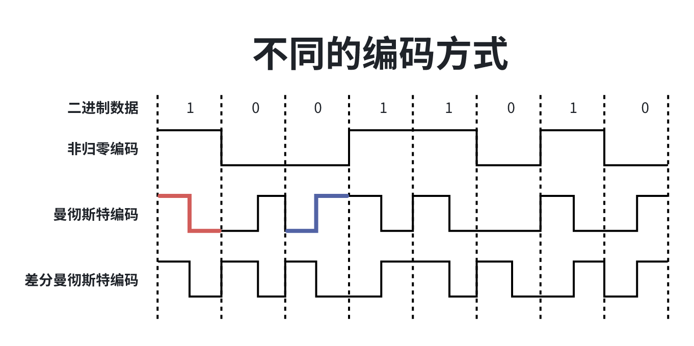
差分曼彻斯特编码：常用于局域网传输，规则是，如果码元为1，则前半个码元的电平与上一个码元的后半个码元的电平相同，如果为0，则相反。该编码的特点是，位每个码元的中间，都有一次电平的跳转，可以实现自同步，且抗干扰性强于曼彻斯特编码。
4B/5B编码：比特流中插入额外的比特以打破一连串0或1，就是用5个比特来编码4个比特的数据，之后在传入给接收方，因此称为4B/5B编码效率为80%。
只采用16种对应16种不同的4位码，其他的16种作为控制码（帧的开始和结束，线路的状态新路等）或保留。
数字数据调制技术在发送端将数字信号转换为模拟信号，而在接收端将模拟信号还原为数字信号，分别对应调制解调器的调制和解调的过程。
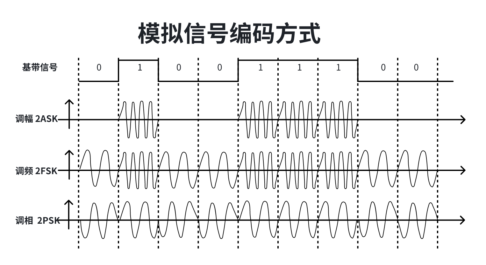
若同时使用调幅和调相叫做QAM调制技术。
某通信链路的波特率是1200Baud，采用4个相位，每个相位有4种振幅的QAM调制技术，那么该链路的信息传输速率是多少？
码元的状态：4 * 4 = 16
码元的进制：log216 = 4，属于4进制码元
1200Baud * 5 = 4800 b/s
计算机内部处理的使二进制数据，处理的都是数字音频，所以需要将模拟音频通过采样、量化转换成有线个数字表示离散序列（实现音频数字化）。最典型的例子就是对音频信号进行编码的脉码调制（PCM），在计算机应用中，能够达到最高保真水平就是PCM编码，被广泛用于素材保存和音频中。主要包含三步：
1、抽样：对模拟信号周期性扫描，把时间上连续的信号变成时间上的离散的信号，为了使所得的离散信号能乌石镇的代表被抽样的模拟数据，要使用定理进行采样：f采样频谱 >= 2f信号最高频率
2、量化：把抽样取得的电平幅值按照一定的分级标准转换为对应的数字值，并取整数，这就是连续的电平幅度转换为离散的数字量。
3、编码：把量化的结果转换为对饮的二进制编码。
为了实现传输的有效性，可能需要较高的频率，这种调制方式还可以使用频分服用技术，充分利用贷款资源，在电话机和本地交换所传输的信号是采用模拟信号传输模拟数字的方式；模拟的声音数据是加载到模拟的载波信号中传输的。
传输介质：也称为传输媒体、传输媒介，是数据传输系统中在发送设备和接收设备之间的额物理通路。
传输媒体不是物理层，传输媒体是在物理层之下的，因为物理层就是体系结构的第一层，因此优势成传输媒体为0层，在传输媒体中传输的是信号，但传输媒体并不知道所传输的信号代表什么意思。但物理层规定了电气特性，因此能够识别传送的比特流。
传输介质的分类：
-> 导向性传输介质：电磁波被导向沿着固体媒体（铜线、光纤）传播。
-> 非导向性传输介质：自由空间，介质可以是空气、真空、海水等。
双绞线：是古老有最常用的传输介质，采用一定规则并非胶合的星湖绝缘的铜导线组成，胶合可以减少相邻导线的电磁干扰。
根据右手准则，胶合的电线会产生次产，两条绞线产生饭馆不一样的磁场可以相互吊销，就可以减少电磁干扰。
为了进一步提高电磁抗干扰的能力，可在双绞线的外面再加上一个由金属丝编制的屏蔽层，就是屏蔽双绞线（STP）无屏蔽层的双绞线称为非屏蔽双绞线（UTP）。
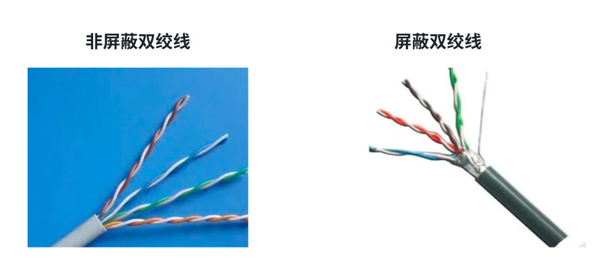
双绞线特点是价格便宜，在局域网和传统电话网中普遍使用，模拟传输和数字传输都可以使用双绞线，新路巨鹿一般为几公里或几十公里，距离太远的话对于模拟传输要用放大器将信号进行放大，对于数字传输，用中继器将失真的信号整形。
同轴电缆：又道题铜制芯线、绝缘体、网状编制屏蔽层和所里外层构成，特点是阻抗数值的不同，通常将同轴电缆分为两类：50Q同轴电缆和75Q同轴电缆，50Q主要用于传送基带数字信号，也交基带通州电缆，在局域网中得到广泛应用，75Q主要用于传送宽带信号又成宽带同轴电缆，用于优先电视系统。
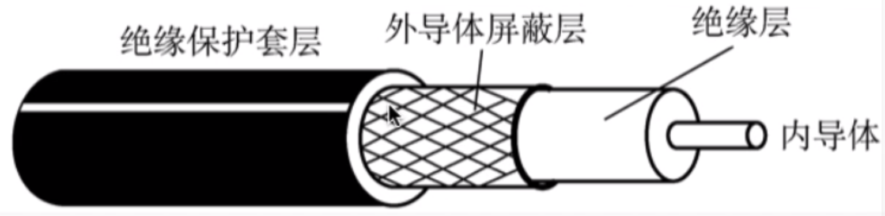
双绞线与同轴电缆区别：外导体屏蔽层的作用，同轴电缆的抗干扰比双绞线号，被广泛用于传输高效率的数据，传输距离更远，但价格贵。
光纤：光纤通信就是使用光导纤维传递光纤脉冲进行通信，有光脉冲表示1，无光脉表示0，而可见光的频率大约是108MHZ，因此光纤通信系统的贷款远远大于目前其他各种传输媒体的带宽。
光纤在发送端有光源，可以采用发光二极管或半导体激光器，他们在电脉冲作用下能产生光脉冲；在接收端用光电二极管做成光检测器，在检测到光脉冲时可还原出电脉冲。
光纤主要纤芯（实心）和包层构成，光波通过纤芯进行传导，包层纤芯有交底idea折射率。挡光先从高折射率的介质向低折射率的介质时，某折射角将大于入射角，因此如果入射角足够大，就会出现完全反射，即光纤碰到包层时候就会折射回纤芯、这个过程不断重复，光也就沿着光纤传播了。
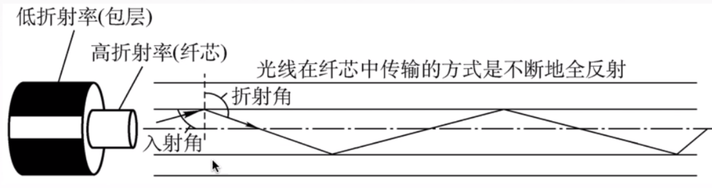
单模光纤与多模光纤：
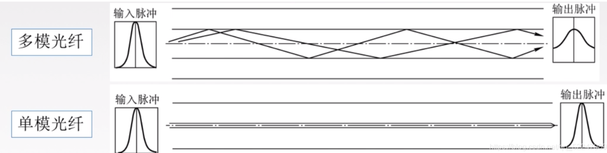
单模光纤：一种在横向模式直接传输光信号的光纤，定向性很好的激光二极管，衰耗小、适合远距离传输。
多模光纤：有多种传输光信号的光纤，光源来自发光二极管，比较容易失真、适合近距离传输。
光纤的特点：
-> 传输损耗小，中继距离长，对远距离传输特别经济。
-> 抗雷电和电磁干扰性能好。
-> 无串音干扰，保密性好，也不易被窃听或截取数据。
-> 体积小，重量轻。
无线电波：信号可以向所有方向传播，具有较强的穿透能力，可远距离，广泛应用于通信领域。
微波：信号沿固定方向传播，并且频率高、频段范围宽，因此数据率很高。广泛应用于微波接力通信和微信通信。
红外线和激光：把要传输的信号分别转换成各自的信号格式，即红外信号和激光信号，在空间中进行传播。
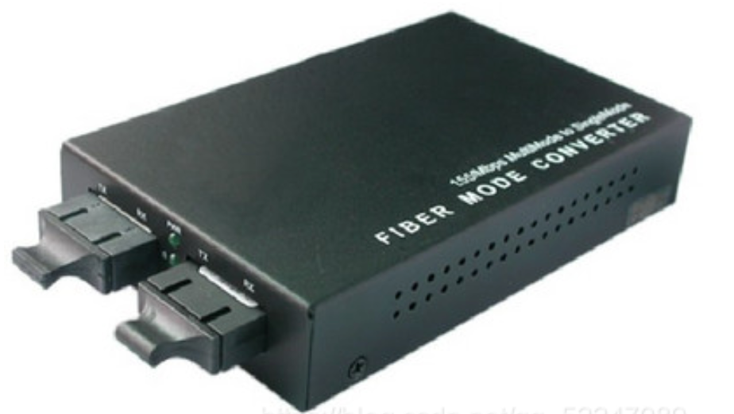
诞生原因：由于在传播过程中存在损耗，在线路上传输的信号功率会逐渐衰减，衰减到一定程度时造成信号失真，一次会导致接收错误。
功能：对信号进行再生和还原，对衰减的信号进行放大 ，保持与原数据相同，以增加信号传输的距离，延长网络的长度。
中继器的两端：两端的网络部分是网段、而不是子网，适用于完全相同的两类网络的互连，且两个网段速率要相同。
中继器只将任何电缆段上的数据发送到另一段电缆上，仅作用于信号的电气部分，不管数据段中是否有错误数据或不适用于网段的数据。
中继器的两端一定要是同一个协议。（因为中继器不会存储转发，存储转发的概念详见网络层数据链路层）
规则，网络标准中对型号的延迟范围做了具体的规定，因为中继器只能在规定的范围内进行，否则会网络故障。
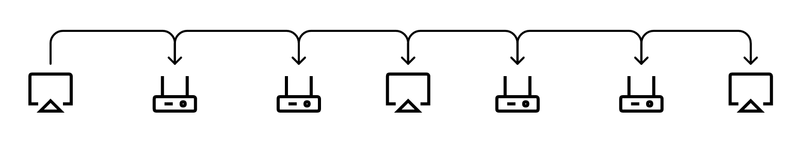
如上图所示，只能有5个网段、4个设备并且只能链接3个主机。
集线器是对信号进行再生放大转发，对衰减的信号进行放大，接着转发到其他所有处于工作状态的端口上，以增加信号传输的距离，延长网络的长度，不具备信号的定向传送能力，是一个共享式设备。
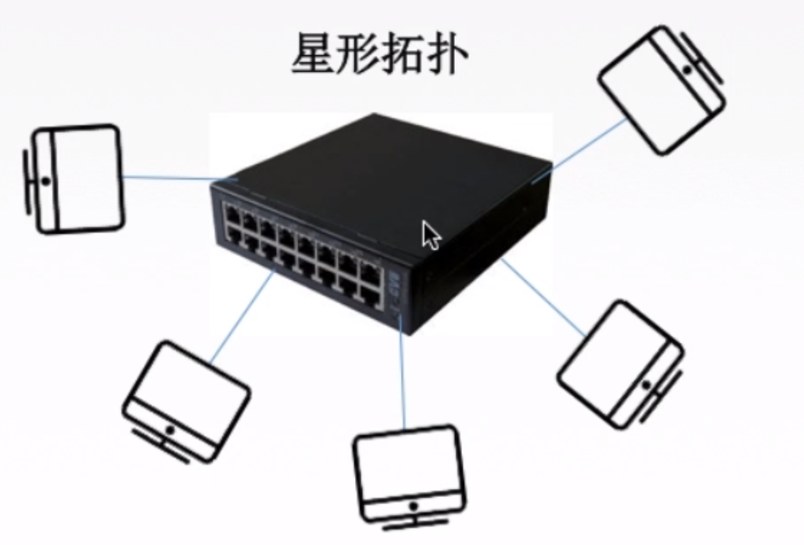
不具备定向传送能力，就是说如果集线器上连接了5台主机，有一串数据是要给其中一台的，但它也会同事发给其他四台主机，其他的四个主机接收到信息之后判断是否要处理。
集线器同一时间内只能传送一组信息，所以每个主机使用集线器的过程就像是多个进程并行一个，排队执行。也就是说集线器不能分割冲突区域，所以连接在集线器上的工作着的主句要平分带宽。